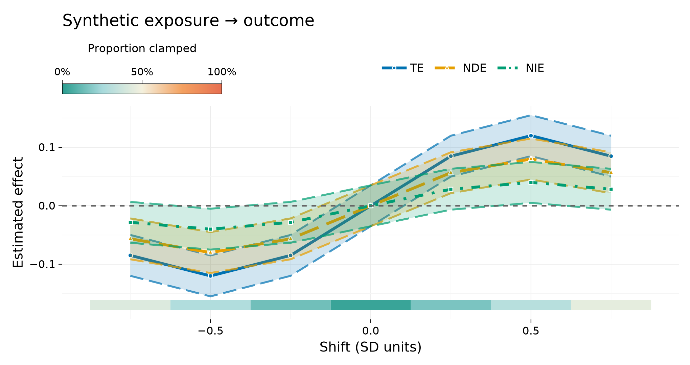

Planning, certificates & plotting
Temporal panel estimation plans, MTP execution planning, policy selection, identification certificates, run metadata, MTP effect curves, and synthetic data-generating processes (DGPs).
Temporal panel plans & sequential bridge
Use the qualified planner and plan type below when working with temporal identification certificates from CausalDynamics.jl. The planner and type remain unexported during the compatibility period; run_estimation_plan also accepts plans returned by the legacy CausalDynamics planner and its session wrapper. See Methods and estimators for a panel example.
CausalTargeted.EstimationPlan — Type
EstimationPlanCausalTargeted plan linking temporal identification to an estimation engine and wide-panel column names.
CausalTargeted.plan_targeted_estimation — Function
CausalTargeted.plan_targeted_estimation(unrolling, query, column_names; ...)Use CausalDynamics temporal identification and wide-panel mapping to prepare an CausalTargeted.EstimationPlan for a CausalTargeted engine.
For same-time contrasts, discrete_treatment=true selects :discrete_lmtp and false selects :lmtp_grid. A query on the same node at later times selects :sequential_lmtp. Other queries select :lmtp_grid.
outcome_specs maps DAG nodes to CausalDynamics NodeOutcomeSpec values. Hurdle outcomes select :two_part_discrete_lmtp and populate presence_col and intensity_col. Binary outcomes use :binomial, and count outcomes use :negbin by default or count_family = :poisson.
Pass data as a wide table to attach complete-case support using min_n as the threshold. missingness, skip, and name_fn control identification and panel column mapping.
CausalTargeted.run_estimation_plan — Function
run_estimation_plan(df, plan; arm_hi, arm_ref, levels, policy, kwargs...) -> NamedTupleRun the CausalTargeted engine named in plan using column names from CausalTargeted.plan_targeted_estimation. Also accepts a legacy CausalDynamics plan.
For :discrete_lmtp, pass arm_hi, arm_ref, and levels to call run_discrete_lmtp_contrast, or pass policy for a single run_discrete_lmtp fit.
For :two_part_discrete_lmtp, pass arm_hi, arm_ref, and levels; uses plan.presence_col and plan.intensity_col.
Remaining kwargs are forwarded to the runner (e.g. folds, rng, learners_outcome, cluster). When omitted, recommend_run_options supplies defaults from nrow(df) and plan.engine.
Identification discipline
A plan whose identifiable flag is false is refused by default (on_unidentified = :refuse): the estimator would otherwise compute a number that the certificate does not license as a causal contrast. Pass on_unidentified = :exploratory to run anyway; the returned NamedTuple then carries identifiable = false and identification_status = :not_identified_by_procedure so the status travels with the estimate instead of living only in a log line. Identified plans return identification_status = :identified (CausalDynamics IDENTIFICATION_STATUSES).
CausalTargeted.plan_sequential — Function
plan_sequential(spec, id_result; shift) -> SequentialPolicyCertificate-first planning: merge baseline adjustment from a CausalDynamics IdentificationResult into a SequentialPolicy (mirrors CausalMediation plan_mediation).
Empty baseline on spec is filled from id_result.adjustment; nonempty fields are kept. Optional shift replaces the numeric policy shift. Factor spec.policies are copied through unchanged. Requires id_result.query isa TemporalEffectQuery.
CausalTargeted.sequential_spec_from_identification — Function
sequential_spec_from_identification(id_result; treatments, outcome, baseline, time_vary, shift, policies, name_fn)Build a SequentialPolicy from an IdentificationResult whose query is a CausalDynamics.TemporalEffectQuery.
Default treatments are name_fn(treatment, t) for $t = 1:t_outcome$; default outcome is the bare query.outcome symbol (terminal column, matching CausalDynamics.simulate_panel terminal=). Pass treatments / outcome / baseline / time_vary explicitly when the wide table uses a different layout.
MTP planning, execution & settings
CausalTargeted.MTPSettings — Type
MTPSettingsConfiguration container for default MTP shift-grid settings (shift grid deltas, support quantiles, cross-fitting folds, training epochs, shift_scale, and stratum retention thresholds). Construct the package defaults with mtp_settings.
CausalTargeted.mtp_settings — Function
mtp_settings() -> MTPSettingsCausalTargeted.default_deltas — Function
default_deltas() -> Vector{Float64}Return the default shift grid deltas from mtp_settings.
CausalTargeted.resolved_stratify_by — Function
resolved_stratify_by() -> Union{Nothing,Symbol}Read MTP_STRATIFY_BY environment variable (age, immunisation, sex, or unset).
CausalTargeted.MTPPlan — Type
MTPPlanValidated execution plan for one estimand grid.
CausalTargeted.plan_mtp — Function
plan_mtp(estimand, data; id_result, deltas, ...) -> MTPPlanWhen id_result is provided (from CausalDynamics.identify), it is wrapped into the certificate; otherwise a minimal certificate is built from the estimand fields.
CausalTargeted.summarise_plan — Function
summarise_plan(plan) -> StringCausalTargeted.execute_estimand — Function
execute_estimand(estimand, data; kwargs...) -> DataFrameDispatch a structural Estimand to the appropriate targeted estimator and return a DataFrame of point estimates, (where available) standard errors, and intervals, with one or more rows depending on the estimand (e.g. δ grid, mediation effects, MSM coefficients).
Plans nuisances via plan_mtp when plan is nothing. Sequential policies may be updated from id_result via plan_sequential. Keyword arguments are filtered per branch and forwarded to the underlying run_* routine (run_lmtp_grid, run_mediation_grid, run_sequential_lmtp, run_survival_lmtp, run_discrete_lmtp, run_two_part_discrete_lmtp, run_repeated_outcome_msm, …).
Main arguments
estimand: instance of a concreteEstimandtype (continuous or discrete LMTP, mediation, sequential, survival, two-part, MSM, …).data:DataFramecontaining the columns named inestimand.
Common keywords
id_result: optional identification result for sequential policies.plan: optional pre-builtMTPPlan; if omitted, built fromestimandanddata.parallel: parallelise grid or stratified jobs whentrue(default:trueifBase.Threads.nthreads() > 1).cache_nuisances: passed through to nuisance estimation.metadata: iftrue, attach fold/learner/estimator/density-ratio metadata to the frame.nuisance_source,temporal_lags,n_mc: passed toplan_mtpand mediation drivers as applicable.
Remaining kwargs are passed only insofar as each branch allows (e.g. folds, rng, learners_outcome, estimator, trunc).
Policy choice
CausalTargeted.PolicyChoice — Type
PolicyChoiceResult of choose_policy: selected label, value table, and optional certificate.
CausalTargeted.choose_policy — Function
choose_policy(candidates, data; id_result, sense=:max, kwargs...) -> PolicyChoiceEvaluate each labelled estimand via execute_estimand and pick the best scalar TE (first row est column) by sense (:max or :min).
candidates is a vector of label::Symbol => estimand pairs (or a Dict).
Identification certificates & run metadata
identification_certificate(...; provenance=CDMProvenance(...)) carries declared graph, mechanism, observation, policy, exogenous, numerical, scale, and coupling identifiers into certificate_dict. Function implementations are not fingerprinted: supply explicit stable identifiers in CDMProvenance.
The returned metadata includes certificate_schema_version = "cdcs.certificate.v2". Semantic identifiers remain distinct from run-time fields such as package version, Julia version, and execution time.
CausalTargeted.IdentificationCertificate — Type
IdentificationCertificateApplication-layer certificate wrapping CausalDynamics.IdentificationResult with column symbols.
CausalTargeted.identification_certificate — Function
identification_certificate(result, trt, outcome; adjustment, mediators, nuisance_source, temporal_lags, provenance) -> IdentificationCertificateWrap a CausalDynamics IdentificationResult in IdentificationCertificate for MTP planning. adjustment and mediators default to Symbol.(result.adjustment) and Symbol.(result.mediators); nuisance_source tags where nuisances were planned from (:graph, temporal, etc.). Optional provenance carries CDM lineage when the result came from a dynamics certificate.
CausalTargeted.certificate_dict — Function
certificate_dict(cert::IdentificationCertificate) -> Dict{String, Any}Flatten IdentificationCertificate into string-keyed metadata for CSV join / provenance columns: merges CausalDynamics.certificate_dict(result) with id-specific keys (id_trt, id_adjustment, …) and, when present, cdm_* entries from CausalDynamics.provenance_dict(provenance).
CausalTargeted.RunMetadata — Type
RunMetadataProvenance for a single MTP grid execution.
CausalTargeted.build_run_metadata — Function
build_run_metadata(estimand, cert; estimator, density_ratio, learners_outcome, learners_trt, n_mc, folds, epochs, parallel, cache_nuisances) -> RunMetadataCapture one row of execution context: estimand string and estimand_engine, learner stacks (comma-joined strings), MTP settings, UTC timestamp, and embedded cert. Used by metadata_dict / attach_run_metadata!.
CausalTargeted.attach_run_metadata! — Function
attach_run_metadata!(df, meta::RunMetadata) -> DataFrameAdd one column per entry of metadata_dict to df, each filled with the scalar value on every row (wide provenance block).
CausalTargeted.metadata_dict — Function
metadata_dict(meta::RunMetadata) -> Dict{String, Any}Merge certificate_dict on meta.certificate with meta_* run keys (engine, folds, epochs, parallel, package version, etc.).
MTP effect curves
These functions visualise effects that have already been estimated; they do not fit an MTP estimator or identify a causal effect. Interval columns can be pointwise or simultaneous bands when the estimator reports available limits; unavailable NaN limits produce a point-only curve. Set ylabel to describe the intervals passed to the function whenever the default "Estimated effect (95% CI)" is not accurate.
Loading CairoMakie activates both the vector API and the DataFrame convenience interface:
CausalTargeted.has_makie — Function
has_makie() -> BoolReturn true when the optional CausalTargetedMakieExt plotting extension is loaded. Loading a Makie backend such as CairoMakie loads Makie and activates the extension.
CausalTargeted.mtp_curve! — Function
mtp_curve!(ax, shift, estimate, lower, upper;
clamp=nothing, estimand=nothing, panel_mode=false,
ribbon_alpha=0.18, strip_gap_fraction=0.020,
strip_height_fraction=0.055)Draw already-estimated modified-treatment-policy (MTP) effects into an existing Makie Axis. This function performs no causal estimation.
The four required vectors contain shift values, point estimates, and lower and upper interval limits. estimand may contain TE, NDE, and NIE labels and defaults to TE for every row. clamp contains optional proportions clamped by the treatment policy; finite values are squished to [0, 1]. Missing or non-finite clamp values are omitted. Shifts and estimates must be finite; interval limits must either both be finite with lower <= upper or both be NaN when uncertainty is unavailable. Such points remain visible without an interval ribbon. All vectors must have equal lengths.
Rows are copied and sorted by shift within the stable estimand order TE, NDE, NIE. Clamp values repeated across estimands must agree at each shift. The returned named tuple contains plot handles plus series and clamp_geometry metadata, making the result composable and inspectable without mutating inputs.
Keywords
panel_mode=false: use compact line and marker sizes suitable for a manually composed faceted layout whentrue.ribbon_alpha=0.18: interval-ribbon opacity.strip_gap_fraction=0.020: gap below the effect range as a fraction of its y span.strip_height_fraction=0.055: clamp-strip height as a fraction of its y span.
CausalTargeted.plot_mtp_curve — Function
plot_mtp_curve(shift, estimate, lower, upper;
clamp=nothing, estimand=nothing, title=nothing,
xlabel="Shift (SD units)", ylabel="Estimated effect",
figure_size=(8.5, 4.5), base_size=12,
ribbon_alpha=0.18, strip_gap_fraction=0.020,
strip_height_fraction=0.055) -> Figure, AxisCreate one complete Makie MTP effect-curve figure and return (figure, axis). The function visualises supplied estimates and intervals; it does not estimate causal effects. Intervals may be pointwise or simultaneous—the configurable ylabel should describe whichever interval the caller supplied.
figure_size is measured in inches. The default physical canvas is 8.5 × 4.5 inches, represented internally at 120 Makie layout units per inch. title is left aligned. The remaining data and strip keywords have the same meaning and validation as mtp_curve!. If no finite clamp values are supplied, the clamp strip and colourbar are omitted. Only estimands present in the data appear in the top legend, ordered TE, NDE, NIE.
Export at exact physical size
For a returned fig, PDF uses pt_per_unit = 72 / 120; 320-dpi PNG uses px_per_unit = 320 / 120:
save("mtp_curve.pdf", fig; pt_per_unit = 72 / 120)
save("mtp_curve.png", fig; px_per_unit = 320 / 120)plot_mtp_curve(df;
shift=:delta, estimate=:est, lower=:lwr, upper=:upr,
clamp=:clamp, estimand=:estimand, kwargs...) -> Figure, AxisDataFrame convenience interface for plot_mtp_curve. Its defaults match the output of run_lmtp_grid, so plot_mtp_curve(grid) works directly. Required column selectors are shift, estimate, lower, and upper. The estimand column is optional and defaults to TE when absent or when estimand=nothing; the optional clamp column is similarly ignored when absent or disabled. A single error lists every missing required column. Column vectors are never mutated.
Load a Makie backend such as CairoMakie to activate this method. Other keywords, including title, xlabel, ylabel, and figure_size, are forwarded to the vector API. To plot simultaneous bands returned by run_lmtp_grid, pass lower=:lwr_sim, upper=:upr_sim, and an appropriate ylabel.
The DataFrame defaults match run_lmtp_grid, including the optional clamp strip:
using CausalTargeted, CairoMakie
grid = run_lmtp_grid(data, :A, :Y; baseline = [:W])
fig, ax = plot_mtp_curve(grid; title = "Exposure → outcome")For simultaneous intervals produced by the grid estimator, select those columns and label them explicitly:
fig, ax = plot_mtp_curve(
grid;
lower = :lwr_sim,
upper = :upr_sim,
ylabel = "Estimated effect (simultaneous 95% band)",
)Synthetic TE/NDE/NIE example
using CausalTargeted, CairoMakie, DataFrames
shifts = [-0.75, -0.5, -0.25, 0.0, 0.25, 0.5, 0.75]
estimands = ["TE", "NDE", "NIE"]
df = DataFrame(
delta = repeat(shifts, length(estimands)),
estimand = repeat(estimands; inner = length(shifts)),
)
scale = Dict("TE" => 0.12, "NDE" => 0.08, "NIE" => 0.04)
df.est = [scale[e] * sinpi(x) for (x, e) in zip(df.delta, df.estimand)]
df.lwr = df.est .- 0.035
df.upr = df.est .+ 0.035
df.clamp = repeat([0.42, 0.28, 0.14, 0.03, 0.16, 0.30, 0.45], length(estimands))
fig, ax = plot_mtp_curve(df; title = "Synthetic exposure → outcome")
fig
For custom multi-panel layouts, create ordinary Makie axes and compose the curve-level primitive directly:
panel = Figure()
ax = Axis(panel[1, 1]; title = "Panel A")
handles = mtp_curve!(ax, delta, estimate, lower, upper; clamp, estimand)The default canvas uses 120 Makie layout units per inch. Save the exact 8.5 × 4.5 inch curve as PDF or 320-dpi PNG with:
save("mtp.pdf", fig; pt_per_unit = 72 / 120)
save("mtp.png", fig; px_per_unit = 320 / 120)Synthetic DGPs
CausalTargeted.simulate_linear_mtp — Function
simulate_linear_mtp(n; β_a=0.5, β_w=1.0, σ_y=0.5, σ_a=1.0, rng) -> (df, truth)Linear DGP: W ~ N(0,1), A = W + ε_a, Y = β_a A + β_w W + ε_y. Under an additive shift of δ on clamped A (no clamp if unbounded), E[Y^{A+δ} - Y^{A}] = β_a * δ when clamp is inactive.
CausalTargeted.simulate_discrete_survival_mtp — Function
simulate_discrete_survival_mtp(n; T=3, α=-1.2, β_a=-0.5, β_w=0.3, σ_a=1.0, rng)Discrete-time survival under longitudinal continuous treatments.
For t = 1…T:
A_t = W + σ_a ε_t- hazard
λ_t = logit⁻¹(α + β_a A_t + β_w W)among units still event-free S_t = 1if still event-free after occasiont(monotone: once 0, stays 0)
truth.survival(δ) is a shared-noise Monte Carlo oracle for $E[S_T^{A+δ}]$ under a raw additive shift (no clamp) of every A_t by δ. With β_a < 0, larger δ raises survival.
CausalTargeted.simulate_mixed_baseline_mtp — Function
simulate_mixed_baseline_mtp(n; β_a=0.5, β_w=1.0, σ_y=0.5, σ_a=1.0, rng) -> (df, truth)Linear MTP DGP with mixed-type baseline covariates for CovariateSchema stress:
W::Float64,site::String,vaccinated::Bool,breed::String- Outcome still depends only on
AandW(site / vaccinated / breed are adjustment noise), so under an additive shiftE[Y^{A+δ} - Y^{A}] = β_a * δwhen clamp is inactive (same assimulate_linear_mtp).
CausalTargeted.simulate_binomial_mtp — Function
simulate_binomial_mtp(n; β_a=0.8, β_w=1.0, σ_a=1.0, rng) -> (df, truth)Logistic outcome, additive shift on continuous A. Sample oracle effects(δ) is the mean difference of σ(β_a (A+δ) + β_w W) versus the factual conditional mean on the same (A, W).
CausalTargeted.simulate_multinomial_outcome — Function
simulate_multinomial_outcome(n; K=3, rng) -> (df, truth)Softmax class probabilities of a linear index in W. truth.P is the n × K probability matrix; Y is a sampled integer label in 1:K.
CausalTargeted.simulate_categorical_treatment_mtp — Function
simulate_categorical_treatment_mtp(n; rng) -> (df, truth)Three-level string exposure A ∈ {0,1,2}, Y = β₁ 1{A=1} + β₂ 1{A=2} + β_w W + ε. Default policy recodes 2 → 1. Oracle TE is (β₁ - β₂) P(A=2) on the sample.
CausalTargeted.simulate_sequential_factor_mtp — Function
simulate_sequential_factor_mtp(n; rng) -> (df, truth)T=2 string exposures A1, A2 ∈ {0,1,2}, time-varying L1, continuous W. Default MTP recodes 2 → 1 at both times. Oracle psi is the sample structural mean under that recode (g-computation with known coefficients).
CausalTargeted.simulate_repeated_outcome_ate — Function
simulate_repeated_outcome_ate(n; T=4, β_a, β_w, ρ, σ_y, rng) -> (df, truth)Binary point treatment with $T$ correlated outcomes (wide layout):
W ~ N(0,1)A ~ Bernoulli(logistic(0.5·W))- shared factor
U ~ N(0,1)and independentε_t Y_t = β_a[t]·A + β_w·W + √ρ·U + √(1-ρ)·ε_t
Truth: tau = β_a (ATE profile; no treatment–covariate interaction).